Dört rol, dört uçtan uca hikaye, bir de perde arkası: ne yaptığını, ekranda ne görmen gerektiğini ve nereye not edeceğini adım adım anlatan rehber. Teknik bilgi gerekmez; merak ve dikkat yeter.
İlk turlarında yazdığın 35 bulgunun 32'si yapıldı; tasarım dili sürüyor, telefonla arama kısmen yapıldı, ana sayfa duvarı senden görsel bekliyor. Rehberin yarısı buna göre yeniden yazıldı; önce farkları oku.
| Ne değişti | Nerede | Rehberde |
|---|---|---|
| Müşteri, kurum ve ajans için tek Etkinliklerim merkezi: talep, teklif ve rezervasyon iş iş tek sayfada. Menüden "Gelen teklifler" ve "Rezervasyonlar" kalktı. Kurumda etkinlik kartı ajans teklif talebini, ajansta ayrı kart kurumsal RFP yanıtını gösterir. | /etkinliklerim | Hikaye 1, 2, 3 |
| Profesyonel ve ajans için tek İşlerim merkezi: Yanıt bekleyen / Teklif verdiklerim / Anlaşılan / Tamamlanan. Panelde "Beklenen gelir" ve "Toplam kazanç". | /islerim | Hikaye 1, 1b |
| Kashe AI tek kutu; giriş yapmadan günde 3 soru. "Etkinliğini planla" da buraya gelir. | /kashe-ai | Isınma |
| Sade üst menü, özgün logo, dikey Keşfet kartları, "Profili incele", "Kurumsal hizmet sağlayıcılar", yakın sonuç veren arama. İlanlarda 12 hazır ilan. | /, /kesfet | Isınma |
| Profilde sabit bölüm sırası; paket ya da hizmet için teklif; ajans üyesinden "ajans üzerinden teklif al". | /p/… | Isınma, Hikaye 2 |
| Formlarda il ve (30 büyükşehirde) ilçe listeden, mekan ayrı kutu; Türkçe tarih ve hızlı seçimler; "Fark etmez" ve "Diğer" açıklaması. | Teklif Al, Rezervasyon Talebi, Teklif Topla | Hikaye 1, 1b |
| Teklifte tarih, saat ve yer; geçerlilikte 48 saat. Aynı kişiyle ikinci iş "Yeni talep #2" kartıyla ayrılır; dosya eki önce önizlemede bekler. | /mesajlar/… | Hikaye 1, 1b |
| Tarihten önce "tamamlandı" müşteri onayı ister; iptalde uyarı ve yorum hakkı; rezervasyon sayfasında iletişim kutusu. | /rezervasyon/… | Hikaye 1 |
| Sihirbaza menüden yol ("Yeni etkinlik"); "ortalama", "Fiyatı belirlenemeyen roller", "Etkinliği nasıl düzenleyeceksin?". | Ajans ve kurum paneli | Hikaye 2, 3 |
| Adaylar: sığan kartlar, "Seçili" işareti, hibritte ajans seçimi, "Kashe'den ara ve ekle", "Kaç kişi?", "Kendi ekibimle devam et". | Etkinlik → Adaylar | Hikaye 2 |
| Ajans menüsü: "Genel bakış", "Ekip yönetimi", tek Takvim ve Kazançlar; tıklanan ajans adı, üyelik sayfası ve teklif tercihi. | /ajans, /kurulus/uyelik | Hikaye 2, Ek turlar |
Kashe, etkinlik dünyasının yetenek pazaryeri: düğün yapan bir çift, ürün lansmanı planlayan bir şirket ya da ekip kuran bir ajans, ihtiyacı olan profesyoneli burada bulur, teklif alır, anlaşır. Sen bu dünyayı dört farklı gözle gezeceksin.
Hata avcılığından çok ürün incelemesi. Elbette kırılan bir şey görürsen yaz; ama asıl değerli olan şu: "Bu ekranda ne yapacağımı anladım mı? Bana doğru ve yeterli bilgi veriyor mu? Güven verdi mi?" Bir ajans sahibi, bir kurum yetkilisi ya da düğün hazırlığındaki biri gibi düşün. Beğenmediğin bir buton adı, kafanı karıştıran bir başlık, fazla gelen bir adım, eksik bir uyarı: hepsi bulgudur.
Hepsini bir günde yapmak zorunda değilsin. Her hikaye kendi başına bitiyor; bir sonrakine istediğin zaman geçebilirsin.
Her hikaye numaralı adımlardan oluşur. Her adımın başında rol yazar; o adımı hangi hesapla yapacağını gösterir. Adımın altında Göreceğin: satırı vardır: ekranda beklediğimiz şey tam olarak budur. Gördüğün farklıysa, işte bulgu.
https://kashe-git-sahne-guvenyapicioglu-8124s-projects.vercel.app
Giriş sayfası…/giris (adresin sonuna /giris ekle)
ParolaTüm Sahne hesaplarında aynı: Sahne!2026
Hesap değiştirmePanelde sol alttaki Çıkış yap (site sayfalarında sağ üstteki avatar menüsü) → /giris → yeni hesapla gir
Bu rehberde "adrese git" dediğimizde ana adresin sonuna sayfa yolunu ekle. Örnek: /kesfet → https://kashe-git-sahne-…vercel.app/kesfet. Ek A'da bütün yolların listesi var.
sahne+…@kashe.net adresleri; gerçek telefon, ad, TC, kart bilgisi yok.Sayfa açılmazsa, "Vercel Authentication" ekranı çıkarsa ya da bir hesapla giriş yapamazsan not al ve devam et; bunlar ortam sorunudur, ürün bulgusu değil. Yine de tabloya yaz, "Tür" sütununa ortam de.
Bütün rolleri sen oynayacaksın. Her hikayenin hesapları aşağıda; hepsinin parolası Sahne!2026.
| Hikaye | Rol | Kim | E-posta | Not |
|---|---|---|---|---|
| 1 | Müşteri | İrem Güneş | sahne+irem-gunes@kashe.net | İstanbul, düğün hazırlığında |
| 1 | Profesyonel | Burcu Ateş | sahne+burcu-ates@kashe.net | Fotoğrafçı, İstanbul, belge doğrulamalı; Ekim Kreatif ajansının üyesi (Ek turlar) |
| 1b | Profesyonel | Kerem Öz | sahne+kerem-oz@kashe.net | Fotoğrafçı, İstanbul (Teklif Topla için; Burcu Ateş de olur) |
| 2 | Ajans | Mavi Sahne | sahne+ajans-mavi-sahne@kashe.net | İstanbul; müzisyen, DJ, dansçı, akrobat, ses-ışık ekibi |
| 2 | Müşteri | Sinan Özdemir | sahne+sinan-ozdemir@kashe.net | İstanbul, şirket yılbaşı partisi için ajans arıyor |
| 2 | Profesyonel | Pazaryerinden seçeceğin sunucu | sahne+<ad-soyad>@kashe.net | Adaylardan birini seçince adresi sen türeteceksin (aşağıda) |
| 3 | Kurum | Marmara Perakende Grubu | sahne+kurum-marmara-perakende@kashe.net | İstanbul, perakende zinciri |
| 3 | Kurum üyesi | Caner Ateş | sahne+caner-ates@kashe.net | Kuruma "Proje yöneticisi" olarak katılacak |
| 3 | Ajans 2 | Nova Etkinlik | sahne+ajans-nova@kashe.net | İstanbul; daveti reddedecek ajans |
| 4 | Yönetici | Sahne yöneticisi | sahne+admin@kashe.net | /admin ve /admin/zeka |
| 4 | Profesyonel | Melih Başak | sahne+melih-basak@kashe.net | DJ, Muğla, onay bekliyor (onaylayacaksın) |
| 4 | Profesyonel | Deniz Avcı | sahne+deniz-avci@kashe.net | DJ, Ankara, onay bekliyor (revizyon isteyeceksin) |
sahne+ad-soyad@kashe.net, Türkçe harfler sadeleşir (ç→c, ğ→g, ı→i, ö→o, ş→s, ü→u, İ→i). Çağrı Keskin → sahne+cagri-keskin@kashe.net, Gül Kaya → sahne+gul-kaya@kashe.net. Ajanslar sahne+ajans-…, kurumlar sahne+kurum-…. Böylece ekranda gördüğün herhangi bir profesyonelin yerine geçebilirsin.Üçünden birine "hayır" dediğin her yer bir bulgu. Küçük görünen şeyler (bir buton adı, bir chip'in rengi, bir başlığın tonu) de dahil. Sen "önemsiz" diye eleme; önceliklendirmeyi birlikte yaparız.
Üç cümle yeter: ne yaptım, ne bekledim, ne gördüm. Yanına sayfa adresi ve ekran görüntüsü.
| İyi bulgu | Yetersiz bulgu |
|---|---|
| "Teklifi gönderdikten sonra sayfa yenilendi, bir onay mesajı görmedim; gönderildi mi emin olamadım. Adres: …/ajans/teklifler/…, ekran görüntüsü ekli." | "Teklif akışı kafa karıştırıcı." |
| "Keşfet'te 'PREMİUM' rozeti kartın üstünde kategori adının üzerine biniyor (telefon genişliğinde)." | "Kartlar bozuk." |
| "Öneri: Ekip sekmesindeki 'Öneriye çevir' ne yapıyor anlamadım; yanına kısa açıklama iyi olur." | "Buton isimleri değişmeli." |
Önce dışarıdan bak: siteye ilk kez gelen biri ne görüyor? Bu bölümün neredeyse tamamı senin bulgularınla yenilendi; gözün en çok burada işe yarayacak.
/kashe-ai). Tek kutu: "Ne arıyorsun?". Önce tek bir rol yaz ("İstanbul'da düğün için fotoğrafçı arıyorum") → Kashe AI'a sor. Sonra bir etkinlik yaz ("Aralıkta İstanbul'da 150 kişilik kurumsal yılbaşı yemeği, DJ ve sunucu lazım").
Tek rolde "Aradığın: Fotoğrafçı" ve o rolden profiller; etkinlikte "Etkinliğin için önerdiklerimiz" başlığı altında rol rol adaylar. Her rolün altında Bu rol için teklif topla →, en altta etkinliği kurmaya götüren düğme. Giriş yapmadan günde 3 soru hakkın var; kalan hak sonucun altında yazar, dördüncüde giriş ya da üyelik ister./kesfet'e geç. Solda süzgeçler: Kim (Hepsi / Profesyoneller / Kurumsal hizmet sağlayıcılar), Kategori, Şehir, Etkinlik türü, "Daha fazla filtre". Arama kutusuna ("İsim, rol ya da etkinlik ara") önce "açılış", sonra "gala" yaz.
Kartlar dikey ve fotoğraf ağırlıklı; isimler "Kerem Ö." biçiminde ve kesilmiyor. Rozetler: KURUMSAL, PREMIUM, YENİ. Kartın üzerine gelince kısa tanıtım ve Profili incele çıkar ("Teklif Al" artık profilin içinde). Arama tanıtım yazılarına ve etkinlik türlerine de bakar; birebir eşleşme yoksa yakın sonuçlar gelir, boş ekran kalmaz./p/5a4e0000-0000-4000-8000-000000010003).
Üstte güven çipleri, sağda Teklif Al ve Rezervasyon Talebi. Bölümler her profilde aynı sırada: Hakkımda → Hizmetler ve paketler → kategori bilgileri → Deneyim → Eğitim → Ödüller → Yorumlar; üstte yapışkan bölüm şeridi. Paket ve hizmet satırlarında Bu paket için teklif al / Bu hizmet için teklif al./ilanlar: Sahne'de artık hazır ilanlar var. Bir ilan aç; başvurmayı ve Yeni ilan aç'ı dene.
İkisi de giriş ya da üyelik ister; üye olunca kaldığın yere dönersin.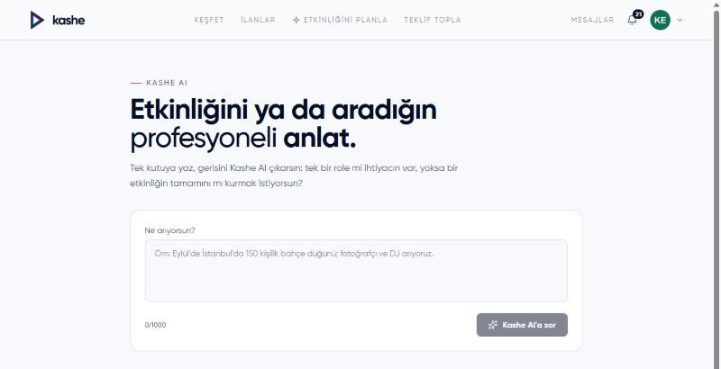
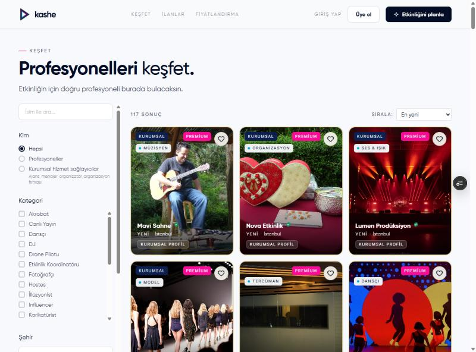
İrem düğün için fotoğrafçı arıyor. Burcu Ateş'i buluyor, teklif istiyor, Burcu fiyat veriyor, İrem onaylıyor; iş yapılıyor, yorum yazılıyor. En temel Kashe hikayesi bu: iki kişi, bir anlaşma. Bu sürümde iki tarafın da işi tek bir merkezden izlediğine özellikle bak.
sahne+irem-gunes@kashe.net (normal pencere)
ProfesyonelBurcu Ateş · sahne+burcu-ates@kashe.net (gizli pencere)
/kesfet'te Kategori: Fotoğrafçı, Şehir: İstanbul süz. Burcu Ateş'in kartında Profili incele.
Profil sayfası; sağda Teklif Al ve Rezervasyon Talebi. Üstte güven çipleri, aşağıda paketler ve portföy./mesajlar/…). Üstte "Etkinlik" şeridi: Tür · Tarih · Lokasyon · Bütçe; lokasyon "mekan, ilçe, il" biçiminde. Sağ panelde kilit kutusu: "İletişim kilitli — Telefon ve e-posta, rezervasyon onaylanınca iki taraf için açılır; rezervasyon iptal edilirse kapanır. Anlaşana kadar mesajlaşma Kashe üzerinden devam eder."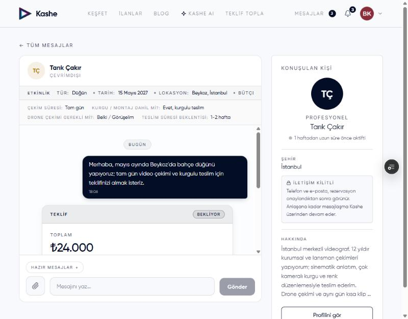
/bildirimler'de "Yeni mesaj aldın"./bildirimler: "Burcu Ateş sana bir teklif gönderdi". Sol menüden Etkinliklerim'i aç.
"Etkinliklerin tek yerde". Durum kartı "Kararını bekleyen teklif var"; Teklif bekleyen sekmesinde işin kartı, sağ üstünde "1 teklif geldi", altında Burcu'nun satırı (tutar ve "Bekliyor"). Karttan sohbete geç: teklif kartının altında Reddet ve Onayla. İkisi de iki tık ister ("Eminsen tekrar tıkla").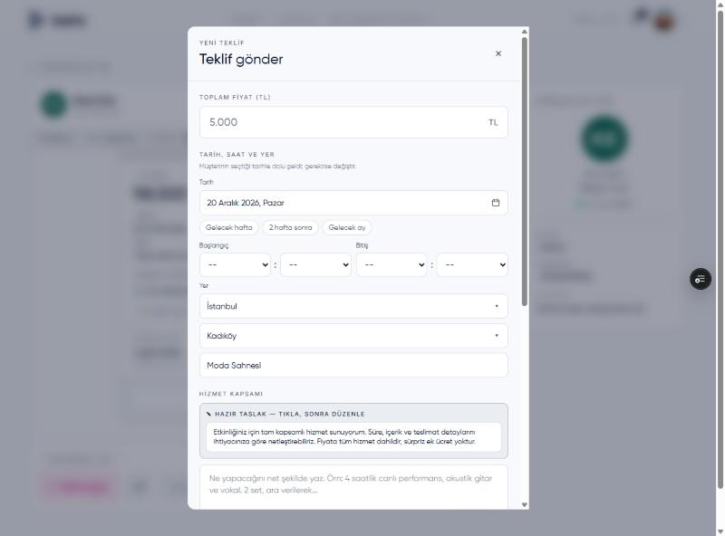
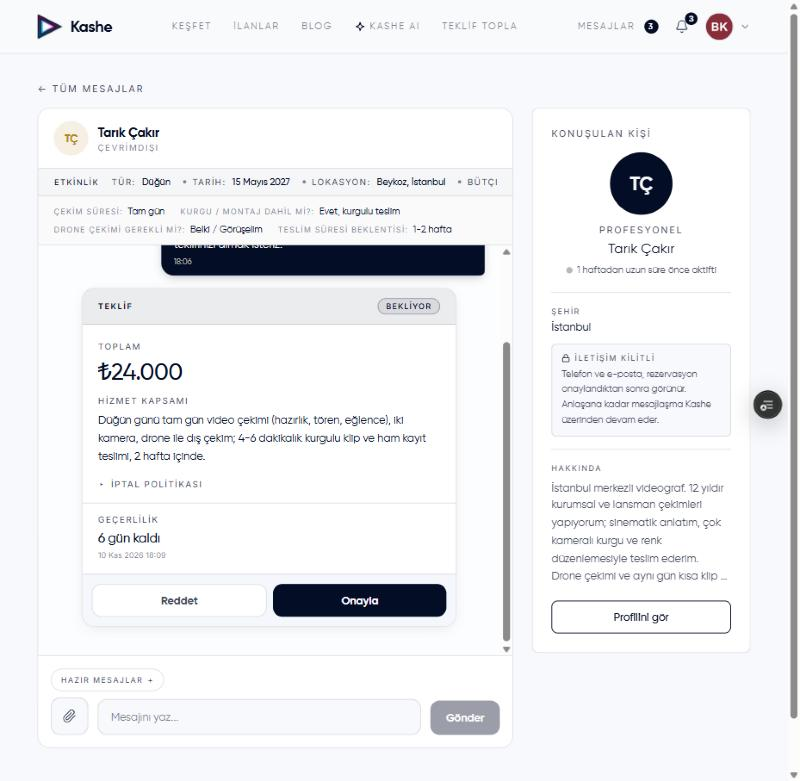
/bildirimler'de artık sana da bir satır var: "Teklifi onayladın — Burcu Ateş ile rezervasyon oluştu"./rezervasyon/… sayfasına geç.
Üstte Burcu'nun adı, rozet Onaylandı. Bloklar: Etkinlik (tarih, saat ve yer teklifteki gibi), Hizmet kapsamı, İptal politikası, Anlaşılan tutar. Yeni: iletişim kutusunda Burcu'nun telefonu ve e-postası burada da yazar. Aksiyonlar'da müşteri için yalnız Rezervasyonu iptal et./bildirimler: "İrem Güneş teklifini onayladı 🎉". İşlerim'de iş Anlaşılan sekmesinde. Sohbetin sağ panelinde İrem'in telefon ve e-postası.
Sol menüde Merkez (/profil): Beklenen gelir kutusu bu işin net tutarını gösterir ("1 onaylı iş · net"). Takvim'de gün işaretli; herkese açık profilindeki takvimde de o gün artık dolu.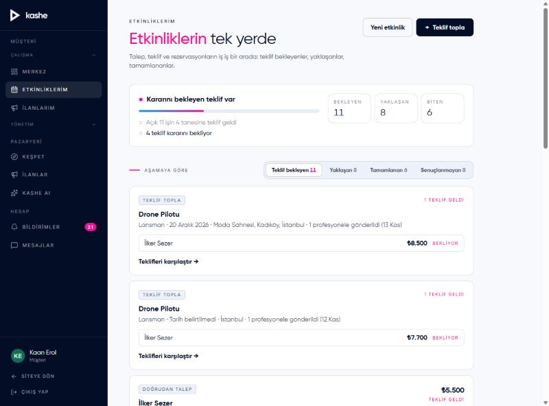
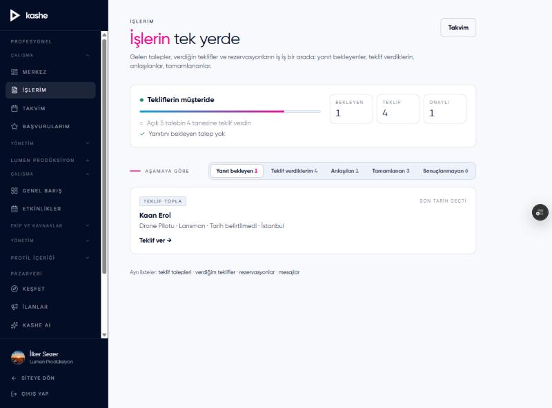
/bildirimler: "Burcu Ateş işin tamamlandığını bildirdi — onayın bekleniyor: …". Rezervasyon sayfasını aç.
"Profesyonel işin tamamlandığını bildirdi." ve Tamamlandığını onayla. Bas: rozet Tamamlandı, iş Etkinliklerim'de "Tamamlanan" sekmesine geçer ve Yorum bırak → çıkar. Tıkla: Burcu'nun profili açılır, yorum penceresi hazır ("Yorum Yaz", Puanın, Yaşadığın deneyim, Yorumu Gönder)./bildirimler "Yeni yorum aldın". Kendi profilinde yorum kartında Yanıtla → teşekkür yaz → Yanıtı Gönder.
Yorumun altında "Profesyonelin yanıtı · tarih". İrem'e "Yorumuna yanıt geldi" bildirimi gider. Merkez'de Toplam kazanç kutusu tamamlanan işle artar; İşlerim'de iş "Tamamlanan"da./admin/zeka "Günlük olaylar" tablosunda (yenileyince): Fiyat teklifi verildi (+1 her teklif), Fiyat teklifi kabul (+1), Fiyat teklifi red (varsa), Rezervasyon oluştu (+1), Rezervasyon tamamlandı (+1). Yorum ve mesajlar olay üretmez. Gece 03:30'da kabul edilen teklif fiyat kıyasına gözlem olarak girer; 03:45'te Burcu'nun güven puanında "Tamamlanan iş" ve "Değerlendirme" bileşenleri yeniden hesaplanır. Ayrıntı Bölüm 10."Teklif Al" tek kişiye gider. Teklif Topla ise bir ihtiyacı aynı anda birçok profesyonele duyurur; herkes kendi teklifini yollar, müşteri karşılaştırır. 20 dakika.
/teklif-topla). Kategori: Fotoğrafçı, Şehir: İstanbul; şehri seçince ilçe ve mekan satırı açılır (ilçe listeden). Etkinlik detaylarını doldur. Gönderim ayarları: Kimlere gönderilsin?, Kaç profesyonele gönderilsin?, Teklif dönüş süresi (48 saat seç). Altta koyu "Talep özeti" şeridi → Teklif talebini gönder →.
Etkinliklerim'e dönersin. "Teklif bekleyen" sekmesinde TEKLİF TOPLA etiketli kart: kategori, tür · tarih · yer · "N profesyonele gönderildi" ve Talebi aç →./bildirimler: "Sana yeni bir teklif talebi geldi". İşlerim → "Yanıt bekleyen".
TEKLİF TOPLA kartı ve Teklif ver →. Talep sayfasında müşterinin brief'i, bütçe (paylaştıysa), dönüş süresi; düğmeler Teklif ver ve İlgilenmiyorum.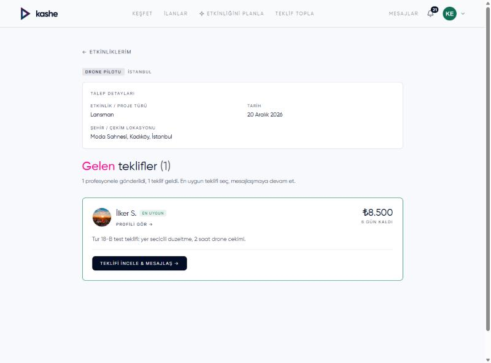
Sinan'ın şirketi yılbaşı partisi yapıyor; işi bir ajansa vermek istiyor. Mavi Sahne etkinliği kuruyor, kendi ekibini yerleştiriyor, ekipte olmayan bir rolü (sunucu) Kashe pazaryerinden buluyor, teklif dosyasını hazırlayıp gönderiyor. Sinan portalda önce revizyon istiyor, sonra onaylıyor. Rezervasyon açılıyor, ekip haberdar oluyor. Kashe'nin en uzun ve en zengin hikayesi.
sahne+ajans-mavi-sahne@kashe.net (normal pencere)
MüşteriSinan Özdemir · sahne+sinan-ozdemir@kashe.net (gizli pencere)
ProfesyonelEkibe alacağın sunucu; adını adaylardan seçeceksin, e-postasını kuraldan türeteceksin (Bölüm 3)
/kesfet → Kim: Kurumsal hizmet sağlayıcılar → Mavi Sahne kartı → Profili incele.
Ajans profili: Ekibimiz (fotoğraflı üye kartları, "Mavi Sahne üzerinden teklif al"), paketler, portföy; sağda Teklif Al / Rezervasyon Talebi./mesajlar'da; sohbette Ekibe ata düğmesini de gör (bir üyeye sohbeti devredebilirsin; şimdilik dokunma).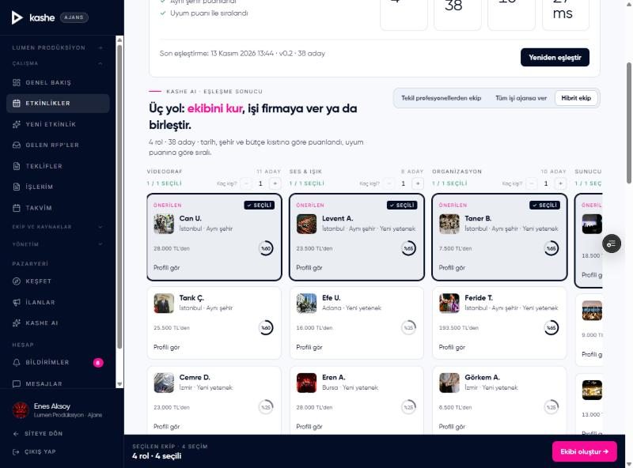
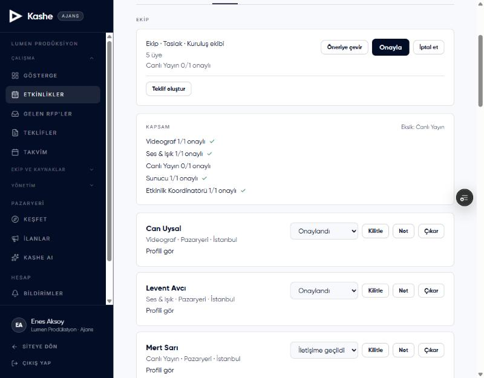
sahne+ad-soyad@kashe.net). /bildirimler.
"Mavi Sahne seni "Sinan Bey yılbaşı partisi" ekibine ekledi" (EKİP etiketi). Tıklayınca /profil'e gidersin; orada ekip yerine dair ayrı bir bölüm yok, kabul/ret düğmesi de yok (bilinen eksik, Bölüm 12). Bir profesyonel olarak burada ne görmek isterdin? Bu soru bu hikayenin en değerli "öneri" bulgusu olabilir./ajans/teklifler/… editörü: "Teklif · Sürüm 1", başlık alanı, "Müşteri adı / Müşteri e-postası", Müşteri görünümü anahtarı, PDF indir (pasif, "Yakında"), Teklifi gönder →. Kalemler tablosu: her ekip üyesi bir kalem (iç maliyet girdiğin üyenin fiyatı 12.000, diğerleri 0). Sütunlar: Kalem · Adet · Birim fiyat · Toplam · Müşteriye görünür · İç maliyet (Yükle) · Marj.sahne+sinan-ozdemir@kashe.net ("Kişi olarak ekle" bağlantısı CRM'e kaydeder; dene). Boş fiyatları doldur (ör. 15.000 / 25.000 / 18.000). + Kalem ekle: "Ekip ulaşımı" 3.000, Müşteriye görünür işaretini kaldır (gizli kalem).
Gizli kalemde "gizli" rozeti; alt not: "Gizli kalemler müşteriye gösterilmez ve toplama girmez". Özette Müşteriye teklif (KDV %20 dahil), İç maliyet · yalnız ajans, Marj · yalnız ajans ("Yükle" ile dolar). Kalemlerde "Pazar: medyan … TL" ipucu çıkabilir.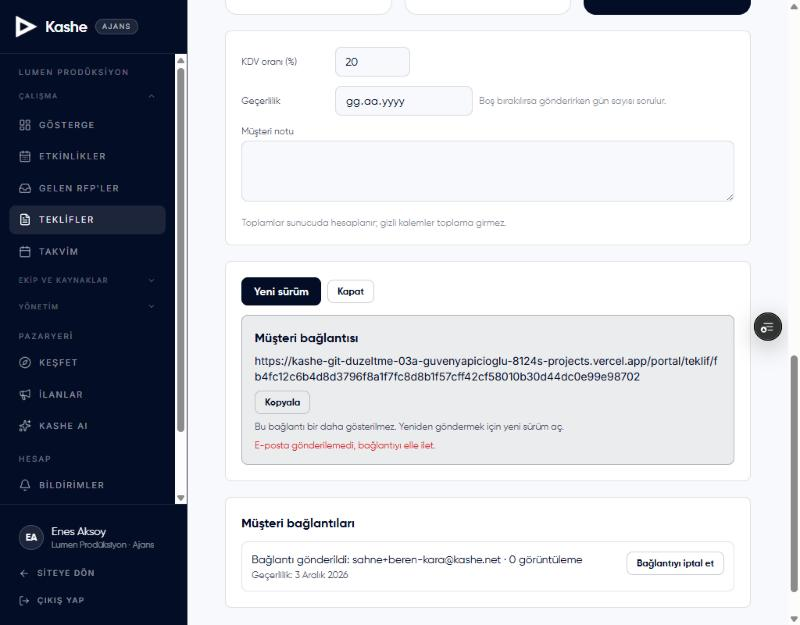
…/portal/teklif/<uzun jeton>.
Belge: "Teklif", Mavi Sahne, rozet Görüntülendi (açtığın an "Gönderildi" → "Görüntülendi" oldu), "Sayın Sinan Özdemir,", başlık, "Sürüm 1 · gönderim …", etkinlik kutusu, kalemler (gizli kalem yok), Ara toplam / KDV / Genel toplam, "Geçerlilik: …". Düğmeler: Teklifi onayla, Revizyon iste. Reddet düğmesi yok (bilinen)./ajans/teklifler: durum Revizyon istendi. Teklifi aç: "Müşterinin revizyon notu" kutusu. /bildirimler: "Sinan Özdemir teklif için revizyon istedi: …" (Teklif etiketi); bildirime tıklayınca teklif açılır.
Sol menüden Etkinlikler'e de bak: etkinliğin kartı "Revizyon istendi" der. Yeni sürüm → "Yeni sürüm açıldı; kalemler kopyalandı." → "Sürüm 2". Fiyatı düşür, Teklifi gönder → → yeni bağlantıyı kopyala. "Eski sürümler (1)" açılır listesi ve "Müşteri bağlantıları" listesinde eski bağlantı görüntüleme sayısıyla durur./bildirimler: "Sinan Özdemir teklifi onayladı: …".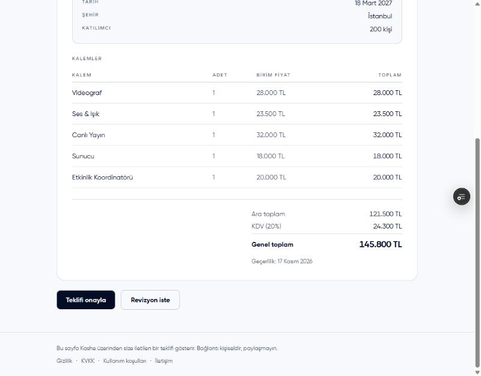
/bildirimler.
""Sinan Bey yılbaşı partisi" için iş kesinleşti (GG.AA.YYYY) — Mavi Sahne". İki bildirim arasında (ekibe eklendi → iş kesinleşti) profesyonelin elinde başka bir şey yok; /takvimim'e bir şey düşmez (ekip üyesi başına rezervasyon yok, tasarım gereği)./bildirimler: "Mavi Sahne rezervasyon oluşturdu: … (GG.AA.YYYY)" (Rezervasyon etiketi). Etkinliklerim → "Yaklaşan" sekmesinde ajans teklifinden açılan rezervasyonun kartı. Teklif e-postası bir Kashe hesabıyla eşleştiği için portal onayı teklifi Sinan'ın hesabına bağladı; eşleşmeseydi müşteri belgeyi yalnız bağlantıdan görürdü. Bir müşteri olarak bunu nasıl buldun?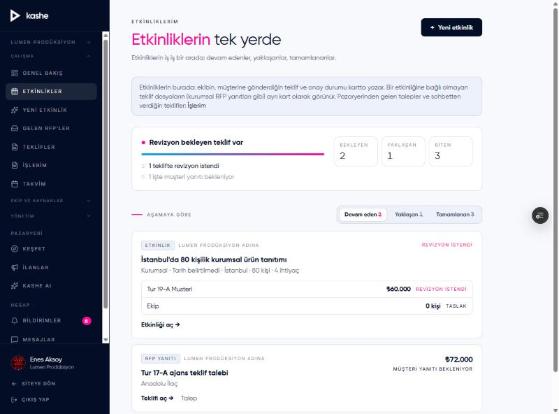
Ajans, teklif dosyası yerine Hikaye 1'deki gibi sohbet içinde kısa bir fiyat teklifi de verebilir; bu yol müşterinin hesabına bağlanır ve iletişim kilidini açar.
/ajans Genel bakış (eski adı "Gösterge"): Açık RFP, Bekleyen teklif, Bu ay etkinlik, Aktif ekip, Açık/Gecikmiş görev, Açık fırsat; "Açık işler", "Yaklaşan etkinlikler", "Yeni etkinlik" kartı, "Ekip ve havuz", "Kazançlar", güven dökümü./etkinliklerim (menüde Etkinlikler): ajansın merkezi. Sekmeler Devam eden / Yaklaşan / Tamamlanan; kartta müşteriye giden teklif ve ekip birer satır, sağ üstte aşama ("Revizyon istendi", "Müşteri yanıtı bekleniyor", "Müşteri onayladı"). Kendi etkinliğine bağlı olmayan teklif dosyaları (kurumsal RFP yanıtları gibi) "RFP yanıtı" ya da "Teklif dosyası" etiketiyle ayrı karttır. /islerim: pazaryerinden ajansa gelen talepler ve sohbetten verilen teklifler./ajans/ekipler (Ekip yönetimi): üstte "Yeni ekip kur" (ekip bekleyen etkinlikler; yoksa "Yeni etkinlik →"), altta "Kurulan ekipler" (durum, "N üye"). /ajans/teklifler: durum rozetleri (Taslak · Gönderildi · Görüntülendi · Onaylandı · Revizyon istendi · Süresi doldu · Reddedildi/Kapatıldı)./ajans/havuz: ekip + harici kişiler tek listede; Harici kişi ekle, ilişki/durum etiketleri; iç oran tablosu yalnız ticari yetkide./ajans/musteriler (CRM): "Öneri" şeridinde teklif müşterisi Sinan için "Kişi olarak ekle"; fırsat aşamaları Yeni → İletişimde → Teklif verildi → Kazanıldı/Kaybedildi./profil/ekibim: kuruluş üyeleri ve roller; Yeni üye davet et ile bir Sahne profesyonelini (örneğin ekibe aldığın sunucuyu) İzleyici rolüyle davet et (davet gidince form kapanır, "Davet gönderildi" mesajı sayfanın üstünde çıkar); sonra o hesapla /davetlerim'den Kabul et → Onayla. Üç kavramı ayırt et: kuruluş üyeliği (kalıcı ekip arkadaşı, rolü var), havuz kaydı (ajansın kişi defteri), etkinlik ekibi (tek bir etkinlikteki rol)./admin/zeka: Brief oluşturuldu, Etkinlik onaylandı, Eşleştirme koşusu, Aday gösterildi, Aday tıklandı (Profili gör'e bastıysan), Ekibe seçildi (her üye), Ekip onayladı (Onaylandı yaptığın her üye), Teklif gönderildi (her sürüm), Teklifte revizyon istendi, Teklif onaylandı, Rezervasyon oluştu. Huni başlığında "Onaylanan etkinlik → rezervasyon" oranı bu etkinlikle artar. Adalet bloğu gösterimleri sayar. Gece 03:30'da teklif kalemleri fiyat kıyasına gözlem olur. Ayrıntı Bölüm 10.Marmara Perakende bayi toplantısı yapacak. Kurum yetkilisi, meslektaşı Caner'i ekibe "Proje yöneticisi" olarak alıyor; Caner etkinliği kuruyor, iki ajansa resmi teklif talebi (RFP) gönderiyor. Biri teklif veriyor, diğeri reddediyor. Kurum revizyon istiyor, sonra seçiyor; ajans rezervasyonu açıyor. Şirketlerin Kashe'yi kullanma biçimi bu.
sahne+kurum-marmara-perakende@kashe.net (normal pencere)
Kurum üyesiCaner Ateş · sahne+caner-ates@kashe.net (gizli pencere)
Ajans 1Mavi Sahne · sahne+ajans-mavi-sahne@kashe.net (teklif verecek)
Ajans 2Nova Etkinlik · sahne+ajans-nova@kashe.net (reddedecek)
/kurumsal: "Kurumsal panel · Genel bakış", KPI kutuları (Açık teklif talebi, Gelen teklif, Yaklaşan etkinlik, Onaylı rezervasyon), "Görevler: Kapalı" kutusunda Ayarlar →, "Hızlı başlangıç", "Ekip · Kuruluş üyesi"./profil/kurumsal-ekip → Davet gönder: e-posta sahne+caner-ates@kashe.net, rol Proje yöneticisi ("Etkinlikleri ve ekibi yönetir, teklifleri görür. İç maliyeti görmez."), kısa not → Daveti gönder.
"✓ Davet gönderildi"; "Bekleyen davetler (1)": BEKLİYOR, rol, "13 gün içinde dolacak", notun, İptal et. Aynı adrese ikinci davet denersen: "Bu e-postaya zaten bekleyen bir davet var."/bildirimler: "Marmara Perakende Grubu seni kurumsal ekibine davet etti". /davetlerim → kart (rol önerilen, mesaj) → Kabul et → Onayla.
"Geçmiş (1) · KABUL EDİLDİ". Sağ üst hesap menüsünde rol satırı "Müşteri · Proje yöneticisi · Marmara Perakende Grubu" ve "Marmara Perakende Grubu paneli" satırı. /profil'de "Kuruluşlarım" altında kurum ve "Panele git →"./kurumsal.
Aynı genel bakış, ama "Görevler" kutusunda "Modül kapalı" (üye ayar açamaz) ve sol menüde "Ekip" ile "Ayarlar" yok. Bir üye olarak yetki sınırlarını ekran sana hissettirdi mi?/profil/kurumsal-ekip: "Ekip üyeleri" listesinde Caner, rol seçicisi (değiştirmeyi dene: İzleyici yap, sonra geri al), Çıkar → Onayla (henüz çıkarma). /kurumsal/ayarlar: "Modüller" → Görevler'i Aç → "Açılsın mı?" → Onayla. Caner tarafında yenile: Görevler artık menüde./kesfet → Kim: Kurumsal hizmet sağlayıcılar → Mavi Sahne profili.
Profilde kurumlara özel bant: Kısa listeye ekle. Bas: "Kısa listede · Teklif talebi açarken buradan davet edebilirsin." ve "Listeyi aç →"./kurumsal/kisa-liste: "Genel" listesi, içinde Mavi Sahne; Yeni liste (liste adı, etkinliğe bağlı/bağsız), kalem notu "Neden bu listede?". Alt bağlantı: "Kısa listedeki ajansları teklif talebine davet edebilirsin → Teklif talepleri"./etkinlik-sihirbazi): Kurumsal, İstanbul, gelecek ay, 300 kişi, bütçe 200.000–300.000; roller DJ, Sunucu, Ses & Işık, Fotoğrafçı; "Etkinliği nasıl düzenleyeceksin?" → Marmara Perakende Grubu adına; başlık "Bayi toplantısı 2027" → Onayla ve etkinliği oluştur.
Etkinlik sayfası; sağ üstte Teklif talebi aç. Adaylar sekmesinde "Tüm işi ajansa ver" kartlarında da "Teklif talebi aç →" var. Kurum etkinliğinde "Ekip" sekmesi var ama havuz ve iç maliyet yok./kurumsal/rfp?etkinlik=… → Yeni teklif talebi: Etkinlik (seçili), Başlık "Bayi toplantısı sahne ve teknik", Son tarih (+7 gün) → Oluştur.
Düzenleyici: "Teklif talebi (RFP)", Açıklama ("Ajanslara iletmek istediğin notlar"), İstenen roller tablosu (etkinliğin ihtiyaçları kopyalandı: Rol · Adet · Bütçe ipucu (TL) · Not · Zorunlu), "Bütçe ipucu yalnız size görünür; ajanslar görmez." Bir rolde bütçe ipucu gir (ör. 20.000–30.000).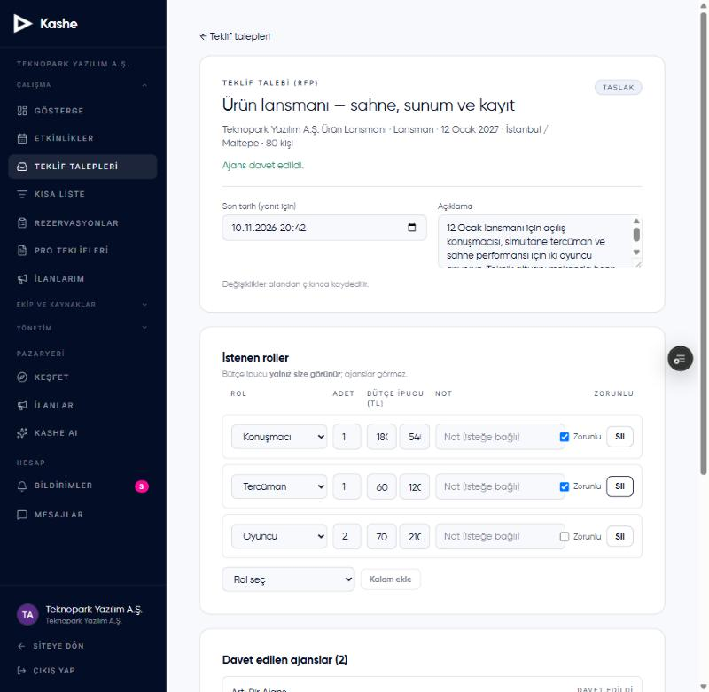
/bildirimler: "Yeni teklif talebi: Bayi toplantısı sahne ve teknik" → /ajans/rfp/….
Alıcı adı, durum "Yanıt bekliyor", "Son tarih", "Açıklama", "İstenen roller" (Rol · Adet · Zorunlu · Not). Bütçe ipucu burada yok; kurumun gizli bilgisi ajansa sızmıyor. Düğmeler Teklif hazırla / Daveti reddet; altta Bu talebi Kashe AI'da planla → talebi sihirbaza dolu taşır./ajans/rfp → talep → Daveti reddet → "Daveti reddedeceksin; talep sahibine bildirilir. Emin misin?" → Reddet.
Rozet "Daveti reddettin"./bildirimler: "Mavi Sahne teklif gönderdi: …" ve "Nova Etkinlik daveti reddetti: …". /kurumsal/rfp/….
Durum Yanıt toplanıyor; "Davet edilen ajanslar (2)": Mavi Sahne "Yanıtladı · Sürüm 1 · tutar", Nova "Reddetti". "Gelen teklifler (1)" tablosu: rol başına tutar, Ara toplam, KDV, Genel toplam, Geçerlilik, Not; "Tutarlar ajansın müşteriye sunduğu fiyatlardır." (iç maliyet yok). Düğmeler Seç / Revizyon iste; "Teklifi reddet" diye bir düğme yok. Sol menüden Etkinlikler'e de bak: "Bayi toplantısı 2027" kartında "Ajanslar · 1 / 2 yanıt · Yanıt toplanıyor" satırı ve sağ üstte "1 teklif geldi"./bildirimler: "Teklifin için revizyon istendi: …" → teklif → Yeni sürüm → DJ fiyatını düşür → gönder ("Sürüm 2")./kurumsal genel bakışında da aynı talep "Seçim yapıldı" görünür (iki sayfa aynı adı kullanmalı; farklıysa yaz).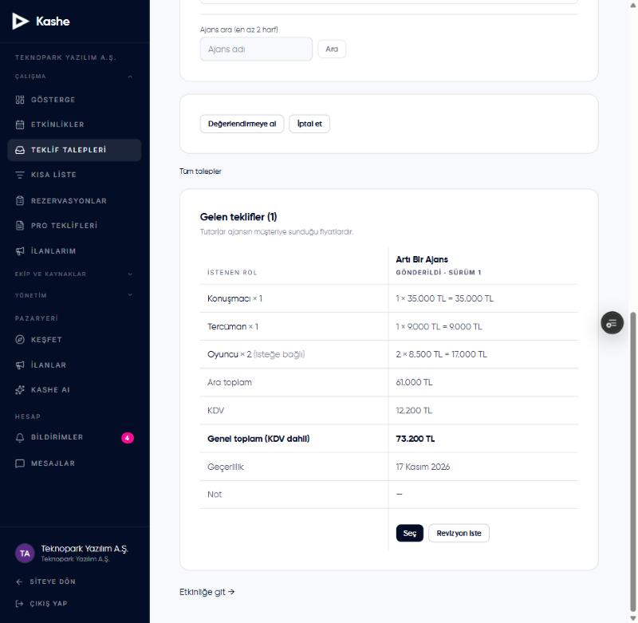
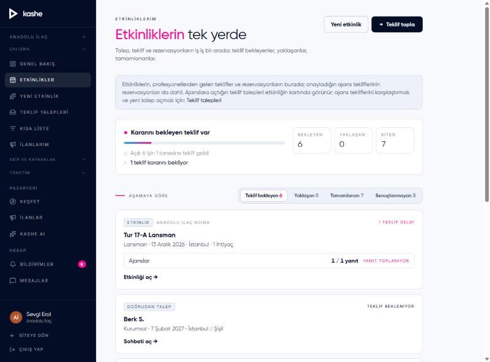
/bildirimler: "Teklifin kabul edildi: …" → teklif sayfası "Onaylandı · Caner Ateş · …" → Rezervasyon oluştur → Oluştur./rezervasyon/…: "Kuruluşunuz adına · Marmara Perakende Grubu", tutar KDV dahil, yalnız Rezervasyonu iptal et. Caner'in /bildirimler'inde "Mavi Sahne rezervasyon oluşturdu: …" (Rezervasyon etiketi).
/kurumsal: "Onaylı rezervasyon" ve "Toplam … TL" arttı./teklif-topla'yı sahipken aç: "Kimin adına?" seçeneği "Kurum adına: Marmara Perakende Grubu" çıkar; Caner'de (Proje yöneticisi) bu seçenek çıkmaz (bilinen sınır: kurum adına Teklif Topla ve ilan yalnız Sahip/Yönetici)./admin/zeka: Etkinlik onaylandı, RFP gönderildi, Teklif gönderildi (sürüm başına), Teklifte revizyon istendi, Teklif onaylandı, RFP sonuçlandı, Rezervasyon oluştu. Davet reddi ve "Değerlendirmeye al" olay üretmez. Gece 03:30'da teklif kalemleri fiyat kıyasına girer (örneğin "DJ · İstanbul · Kurumsal" hücresi bir gözlem kazanır).Kashe'nin arka odası. Yeni profilleri onaylıyor, revizyon istiyor, bir güven puanı itirazına karar veriyor ve önceki üç hikayenin bıraktığı izleri "Zeka" sayfasında okuyorsun.
sahne+admin@kashe.net (normal pencere)
Onaylanacak proMelih Başak (DJ, Muğla) · sahne+melih-basak@kashe.net
Revizyon istenecek proDeniz Avcı (DJ, Ankara) · sahne+deniz-avci@kashe.net
İtiraz edecek proBurcu Ateş (Hikaye 1) · sahne+burcu-ates@kashe.net (gizli pencere)
/admin.
"Dashboard — Platformun canlı durumu ve hızlı aksiyonlar." Altı kart: Bugün yeni kayıt, Bu hafta rezervasyon, Bekleyen kategori talebi, Askıdaki kullanıcı, Bekleyen şikayet, Onay bekleyen profil ("N revizyon istendi"). Listeler: son kategori talepleri, son yeni kullanıcılar, son askıya alınanlar. Alt şerit: Toplam kullanıcı · Profesyonel + ajans · Rezervasyon. Sağ üstte Rapor indir (.xlsx): dört sayfalık Excel (Özet, Kullanıcılar, Profesyoneller, Aylık trend); indirip aç./admin/profiller.
Sekmeler ve sayılar: Onay Bekleyen · Revizyonda · Reddedilen · Tümü; bu sayılar dashboard kartıyla aynı olmalı. Kartta rol, kategori, ad, e-posta, "Onay bekliyor / Yayında değil" rozetleri, "Kayıt: …", Önizle →, Askıya al →, düğmeler Onayla · Revizyon iste · Reddet./kesfet → Kategori DJ → Melih Başak artık listede (anında yayında). Sahne'de e-posta gitmez; gerçekte "Profilin onaylandı ve yayında" e-postası gider./profil'de revizyon durumu ve yönetici notu görünüyor mu? Profilini düzenleyip yeniden onaya gönderebiliyor mu? Burada gördüğün her şeyi yaz; bu akış en az turlanan yerlerden./admin/kullanicilar: arama, rol/durum süzgeçleri; bir Sahne müşterisini (ör. Yiğit Soylu) Askıya al → pencere "Hesabı askıya al", sebep (5–500 karakter) → onayla; dashboard'da "Askıdaki kullanıcı" +1; sonra Askıyı kaldır.
Askıyı kaldırma penceresinde "Onaylı profil yeniden yayına alınır." yazar; onaylı profil yayına döner, onaysız olan dönmez./profil: Güven dökümü kartı: "Trust Score V0 · tarih · günlük hesaplanır", tablo (Bileşen · Puan · Değer · Nasıl artar), altta "70 ve üzeri eşleştirmede "yüksek güven" olarak işaretlenir. Puan yalnız sana görünür; müşteriler sayıyı görmez." Bir de Pazar aralığı kartı: rolün için p25–p75, medyan, "Senin liste fiyatın: … pazar aralığında/altında/üstünde".
Burada Hikaye 1'in etkisi henüz yok: tamamlanan iş ve yorum gece 03:45'te hesaba girer. Ertesi gün tekrar bak; "Tamamlanan iş" ve "Değerlendirme" satırları değişmiş olmalı./admin/zeka → "Güven puanı · Trust Score V0" bloğu: "Açık itiraz 1". İtiraz kuyruğu satırı: sağlayıcı, itiraz anındaki puan ("güncel …"), mesaj, Karar sütununda not kutusu + İncelendi / Kapat. Not yaz ("Portföy ve yorum sayısı ertesi gün hesaba girer.") → Kapat.
Satırda tarih; "Açık itiraz 0 · kapatıldı 1". Karar puanı değiştirmez (bilerek). Burcu tarafında: "Kashe notu · tarih" ve Yeni itiraz aç./admin/zeka, pencere 7 gün. Beş blok: Günlük olaylar, Fiyat kıyasları · yayınlanan hücreler, Güven puanı, Huni · talepten rezervasyona, Adalet · görünürlük dağılımı.
"Günlük olaylar" tablosunda bugünün satırları: Hikaye 1–3'ün her adımı burada bir olay. Beklediğin olayları hikayelerin sonundaki "Perde arkası" kutularından kontrol et: sayı tutuyor mu?/admin/istatistikler (sekmeler: Genel, Talep-Arz, İçerik, Büyüme, Hunisi, Tutundurma, Rezervasyon, Operasyonel, Yönetim), /admin/sikayetler, /admin/kategori-talepleri, /admin/ilanlar, /admin/yorumlar. Hangi sayı bir yönetici olarak işine yarar, hangisi gürültü? Yaz.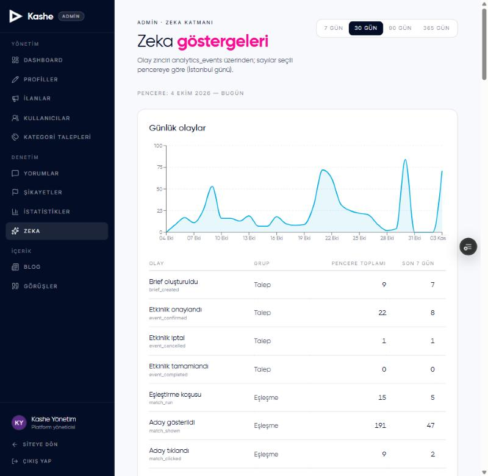
Kashe'nin "zekası" bugün üç kural tabanlı parçadan oluşuyor: olay zinciri, fiyat kıyasları ve güven puanı. Her işlemin izini nerede ve ne zaman göreceğin aşağıda.
Bugün sistemde kendi kendine öğrenen bir model yok. Eşleştirme sabit ağırlıklarla puanlar (aynı şehir 40, yüksek güven 15, yeni yetenek 5…), fiyat kıyası son 90 günün yüzdeliklerini alır, güven puanı altı bileşenli sabit bir formülle hesaplanır. Sistemin yaptığı tek "güncelleme", aynı kuralların her gece yeni veriyle yeniden koşması. Öğrenen modeller (kabul olasılığı, fiyat modeli, kalibre edilmiş güven) 2027 Ar-Ge dönemine planlandı; bugün yaptığın her işlem o modellerin eğitim verisini biriktiriyor: hangi aday gösterildi, hangisi tıklandı, teklif tutarları, kim iptal etti, günlük puan dökümleri. Yani senin turların da bu verinin parçası.
"Anında" = işlemin hemen ardından, sayfayı yenileyince. "Gece" = İstanbul saatiyle 03:30 (fiyat kıyası) ve 03:45 (güven puanı).
| Yaptığın işlem | /admin/zeka'da | Başka yerde | Ne zaman |
|---|---|---|---|
| Kayıt olmak | — | Dashboard: Bugün yeni kayıt, son yeni kullanıcılar; pro/ajans/işletme ise Onay bekleyen profil | anında |
| Profil onayı | Olay yok; ertesi gece "Puanlı sağlayıcı" +1, profil bileşeni başlar | Keşfet'e girer; onay kartı düşer | profil anında; puan gece |
| Revizyon / Reddet / Askı | Ertesi gece puan boşalır, dağılımdan çıkar | Keşfet'ten çıkar; askı sayısı artar | anında; puan gece |
| Sihirbazda brief | Brief oluşturuldu; huni "Brief" | — | anında |
| Etkinlik onayı | Etkinlik onaylandı; huni paydası | — | anında |
| Eşleştirme | Eşleştirme koşusu, Aday gösterildi, Aday tıklandı; Adalet bloğu | — | anında |
| Ekibe ekleme / üye Onaylandı / Reddetti | Ekibe seçildi, Ekip onayladı, Ekip reddetti; "Seçim yapan" | Profesyonele "ekibine ekledi" bildirimi (yalnız ekleme) | anında |
| Teklif dosyası gönderme | Teklif gönderildi (sürüm başına) | Fiyat kıyasına gözlem | olay anında; kıyas gece |
| Portal onay / revizyon; ajans "Kapat" | Teklif onaylandı / Teklifte revizyon istendi (yalnız ilk) / Teklif reddedildi | — | anında |
| Sohbette fiyat teklifi / kabul / red | Fiyat teklifi verildi / kabul / red | Kabul edilen teklif fiyat kıyasına gözlem | anında; kıyas gece |
| RFP gönder / seç / iptal | RFP gönderildi / RFP sonuçlandı / RFP iptal | Davet reddi ve "Değerlendirmeye al" olay üretmez | anında |
| Rezervasyon oluşması | Rezervasyon oluştu; huni "Rezervasyon" | Dashboard "Bu hafta rezervasyon" (eksik sayabilir) | anında |
| İş tamamlandı (tarih gelmediyse müşteri onayından sonra) | Rezervasyon tamamlandı; ertesi gece "Tamamlanan iş" bileşeni | Müşteriye "Yorum bırak" | olay anında; puan gece |
| Rezervasyon iptali | Rezervasyon iptal; satıcı iptal ettiyse ertesi gece "İptal" bileşeni düşer (müşteri iptali puanı etkilemez) | Satıcı iptalinde müşteri yorum bırakabilir; iletişim yeniden kilitlenir | olay anında; puan gece |
| Yorum / yorum silme | Olay yok; ertesi gece "Değerlendirme" bileşeni (3 yorumun altında nötr 8) | Profilde ortalama anında | gece |
| Mesaja yanıt | Olay yok; ertesi gece "Yanıt süresi" (yalnız yanıtlanan konuşmalar, son 180 gün) | — | gece |
| Avatar, tanıtım, portföy, rol ekleme | Ertesi gece "Profil onayı ve tamlığı" bileşeni | Profil anında | gece |
| İtiraz / karar | Açık itiraz sayısı, kuyruk; karar puanı değiştirmez | Pro "Kashe notu" görür | anında |
| Bileşen | En çok | Nasıl hesaplanır |
|---|---|---|
| Doğrulama | 25 | Doğrulama düzeyi: yok 0 · e-posta 10 · belge 20 · tam 25 |
| Profil onayı ve tamlığı | 15 | Onaylı 5 · tanıtım ≥120 karakter 3 · avatar 2 · en az bir rol 2 · en az 3 portföy öğesi 3 |
| Tamamlanan iş | 25 | Tüm zamanlarda satıcı tarafı tamamlanan rezervasyon: 1–2 → 10 · 3–9 → 18 · 10+ → 25 |
| İptal | 0 (−15'e kadar) | Son 12 ayda satıcının iptal oranı: yok 0 · %10 altı −5 · %25 altı −10 · üzeri −15 |
| Değerlendirme | 20 | 3'ten az yorum: nötr 8 · ortalama ≥4,7 → 20 · ≥4,3 → 15 · ≥3,8 → 10 · altı 4 |
| Yanıt süresi | 15 | Müşterinin ilk mesajından ilk yanıta geçen sürenin medyanı: ≤2 saat 15 · ≤24 saat 10 · ≤72 saat 5 · üzeri 0 · veri yoksa nötr 7 |
Puan 0–100 arasında, yalnız yayındaki sağlayıcılar için hesaplanır; 70 ve üzeri eşleştirmede +15 puan "yüksek güven" avantajı alır. Müşteri sayıyı görmez, Keşfet sıralaması değişmez.
Her hücre bir rol × şehir × etkinlik türü üçlüsü. Gözlem = ajansın gönderdiği teklif dosyasındaki görünür rol kalemleri (son gönderilen sürüm) + sohbette kabul edilmiş fiyat teklifleri. Liste fiyatları ve iç maliyetler asla sayılmaz. Bir hücrede son 90 günde en az 15 gözlem olunca "yayınlanır" ve kullanıcılar görür: sihirbazda "Pazar kıyası" kutusu, Keşfet şeridi, ajans teklif editöründe "Pazar: medyan …", profesyonelin profilinde "Pazar aralığı". Yayınlı hücre yoksa hiçbir şey görünmez; "veri yok" yazısı bile yok. Bu sessizlik doğru mu, kullanıcıya söylenmeli mi? Fikrin değerli.
Burcu Ateş, Ekim Kreatif ajansının üyesi (rolü İzleyici). İlk turda "iki Takvim, tıklanmayan ajans adı, teklifi kim verir?" diye sorduğun yer burası.
/kurulus/uyelik: "Üyeliğin". Kutular: Kuruluş, Rolün, Üyelik başlangıcı; "Neleri yapabilirsin"; "Bağlantı nasıl çalışır"; "Teklif tercihin": Kendim teklif veririm (seçili) / Ajansım üzerinden; en altta "Üyelikten ayrılma".sahne+ajans-ekim@kashe.net) İşlerim → "Yanıt bekleyen"de, kartta "Tercih: Burcu A." notuyla görünür. Teklifi ajans verir; müşteri çift teklif almaz. Denedikten sonra tercihi "Kendim teklif veririm"e geri al.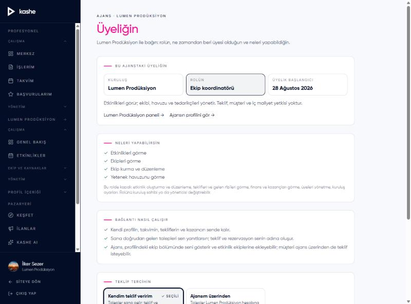
Sahne'de 12 hazır ilan ve 18 başvuru var; istersen yeni ilan açmadan 3. adımdan başla.
/ilanlar/yeni: Temel bilgiler, Proje detayları, Aranan nitelikler, Çalışma koşulları, etkinlik türü, lokasyon, kişi sayısı, son başvuru tarihi, bütçe; Yayınla ("İlan admin onayına gönderilir…").
/ilanlarim: "İlanın onaya gönderildi. Admin onayladıktan sonra ilan tahtasında görünür ve başvuru kabul eder." Durum "Onay bekliyor"./admin/ilanlar → Onay Bekleyen → Onayla; "Öne çıkarma" seçeneklerine bak (Acil / Kategori üstü / Vitrin, 7 gün)./ilanlar → ilan → başvur; /basvurularim'da "Bekliyor"./ilanlar/… başvurular: Kısa listeye al / Kabul et / Reddet (her biri → Onayla); Başvuruları kapat. Profilden ilana davet: bir profesyonelin sayfasında Davet → ilanı seç → "Daveti gönder"; pro tarafında "Bir ilana davet edildin: …"./admin/kategori-talepleri: İncelemeye al → Onayla ("Eminim — Onayla"); not: onay yalnız talebi kapatır, kategoriyi ayrıca "Yeni kategori ekle" ile eklersin. /admin/sikayetler: İncelemeye al → Çözüldü + not.Kerem Öz ile /profil/duzenle (avatar yükle, tanıtım), /profil/hizmetlerim ve /profil/paketler (fiyat), /profil/portfoy (görsel yükle, açıklama, sırala), /profil/deneyim, /profil/kategori-bilgileri (çalıştığı etkinlik türleri; Keşfet süzgecine etkisi), /takvimim (müsaitlik kapat/aç), /premium. Her değişikliği profilde ve Keşfet'te kontrol et.
Telefondan ya da daraltılmış pencereden Hikaye 1'i baştan sona tekrar et: hamburger menü (Panel bloğu, Mesajlar/Bildirimler rozetleri), profil sayfasındaki alt sabit çubuk (Teklif Al / Rezervasyon Talebi), sohbet sayfası, teklif kartı. Etkinliklerim ve İşlerim merkezlerine, tarih ve ilçe seçicilere de telefonda bak. Kaydırma, taşma, dokunma alanı: ne rahatsız etti?
Bunları zaten biliyoruz; yeniden bildirmene gerek yok. Ama "bence şöyle olmalı" diyorsan o fikir çok değerli: tabloya öneri olarak yaz.
Tek yer: "Sahne bulguları — Fahri" Google Sheet'i. Sütunları:
| # | Tarih | Hesap / rol | Sayfa (URL) | Ne yaptım | Ne bekledim | Ne gördüm | Ekran görüntüsü | Önem | Tür | Durum |
|---|---|---|---|---|---|---|---|---|---|---|
| 1 | … | Ajans — Mavi Sahne | …/profil/ekibim | Davet gönderdim | Onay mesajı | Form açık kaldı | bağlantı | D | öneri | Yapıldı. Davet gidince form kapanıyor… |
Hikaye başına bir oturum, sonunda 15 dakikalık özet: en çok neye takıldın, en çok neyi beğendin, bir şeyi değiştirebilsen ne olurdu? Her oturumdan sonra 20 dakikalık üçlü triyaj: hangisi hata, hangisi ürün kararı, hangisi sonraya. Düzeltmeler birkaç iş birikince toplu olarak aynı Sahne adresine gelir; sen yeniden denersin.
Ana adresin sonuna eklenir. Bazı sayfalar role göre açılır; yetkin yoksa seni panele ya da profile yönlendirir.
| Herkes | Müşteri / kurum üyesi | Profesyonel |
|---|---|---|
//kesfet/ilanlar/blog/kashe-ai/giris/uye-ol/p/<id>/portal/teklif/<jeton> |
/profil/etkinlik-sihirbazi/etkinliklerim (merkez)/teklif-topla/teklif-taleplerim/<id>/ilanlarim/ilanlar/yeni/rezervasyonlarim/rezervasyon/<id>/mesajlar/bildirimler/davetlerim/odemelerim/favorilerim |
/profil/profil/duzenle/profil/hizmetlerim/profil/paketler/profil/portfoy/profil/deneyim/profil/kategori-bilgileri/islerim (merkez)/teklif-talepleri/kurulus/uyelik/basvurularim/takvimim/kazanclarim/premium |
| Ajans | Kurum | Yönetici |
|---|---|---|
/ajans/etkinliklerim (merkez)/islerim/ajans/teklifler/ajans/rfp/ajans/ekipler/ajans/havuz/ajans/musteriler/ajans/tedarikciler/profil/ekibim/kurulus/gorevler/etkinliklerim/<id>?sekme=adaylar|ekip|gorevler|aktivite |
/kurumsal/etkinliklerim (merkez)/kurumsal/rfp/kurumsal/kisa-liste/kurumsal/ayarlar/profil/kurumsal-ekip/kurulus/gorevler |
/admin/admin/profiller/admin/ilanlar/admin/kullanicilar/admin/kategori-talepleri/admin/yorumlar/admin/sikayetler/admin/istatistikler/admin/zeka/admin/blog/admin/gorusler/admin/rapor |